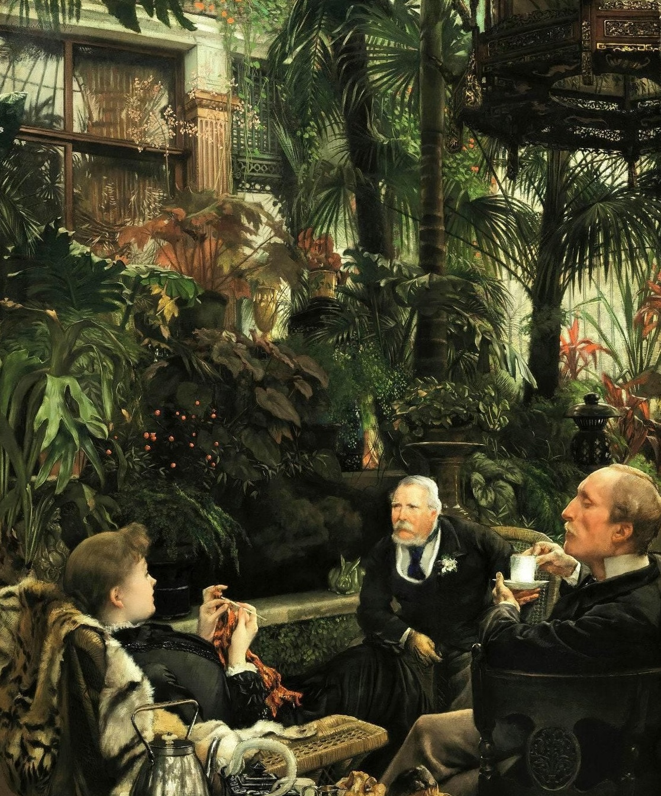

✦
Places
Estates, cities, forests, and all the spaces between.
Writing Journal
Starling & Nightingale
A private record of places, persons, and peculiar events in a world kept just beyond the veil.

Keep the foundations of your shared world in one quiet, easy-to-find place.
Estates, cities, forests, and all the spaces between.
Families, secret societies, courts, and other allegiances.
Rites, rumors, etiquette, beliefs, and forbidden knowledge.
A dated journal for active storylines, secrets, and notable developments.
Chapter I
Current
Write a short plot summary here: the present situation, the important characters involved, and the question that carries into the next scene.
Chapter II
Unresolved
Use this entry for a developing thread, a piece of foreshadowing, or a plot point waiting to return.
Select a volume to open its character note. Each volume has room for a portrait or old painting.
A growing record of completed scenes, with room to preserve what happened in each one.
Record the essential events of the scene here. Include decisions, discoveries, changes in relationships, and anything that will be important to remember later.
Add a clear synopsis here. This can be as long as you need it to be; the layout will expand with your notes.
Use one entry per finished scene or chapter, then duplicate this block when the archive grows.